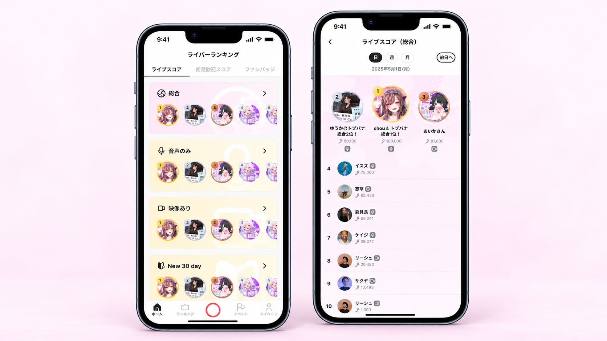
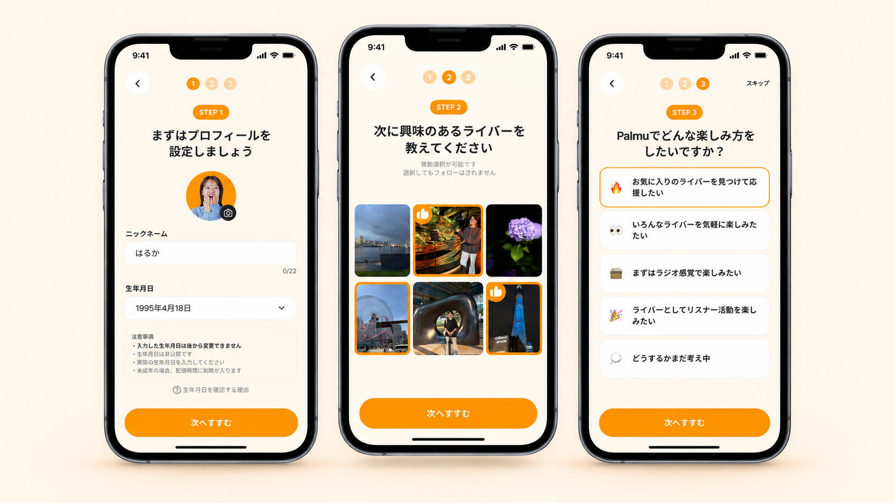
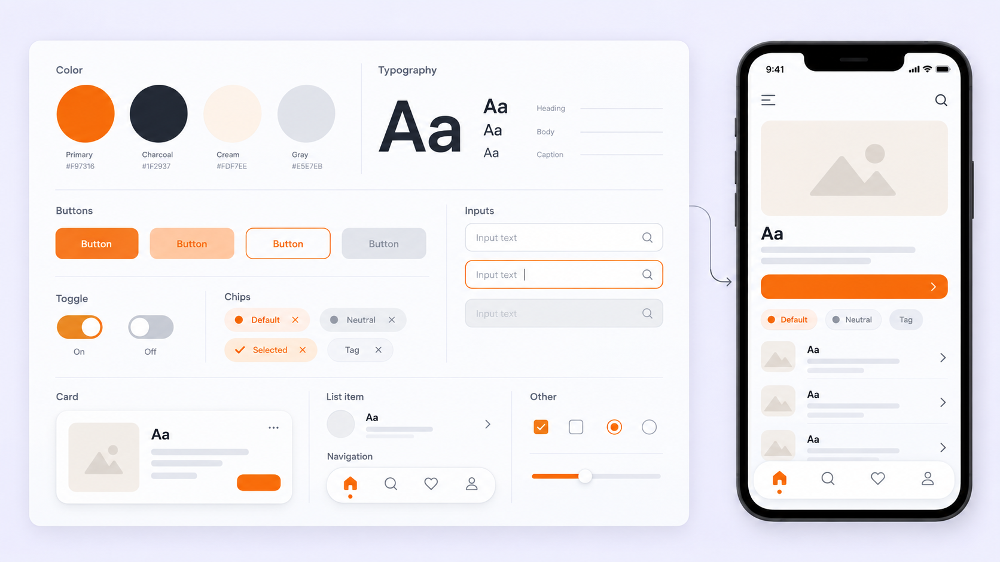
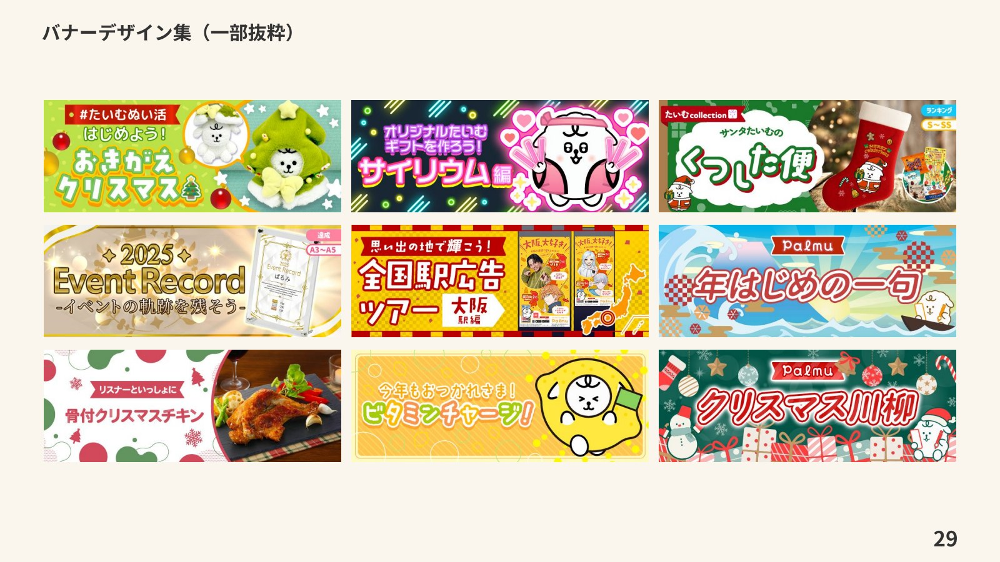
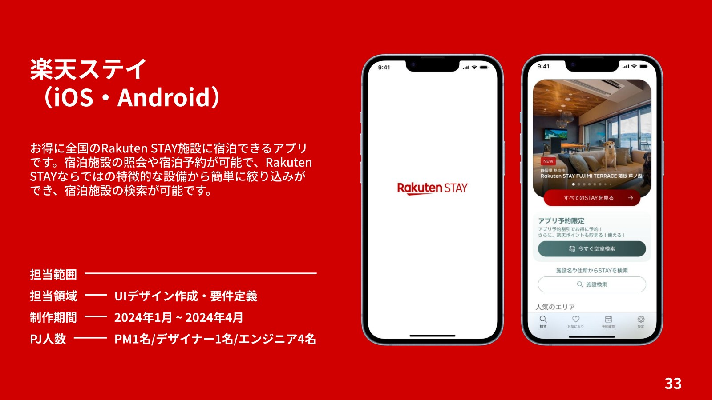
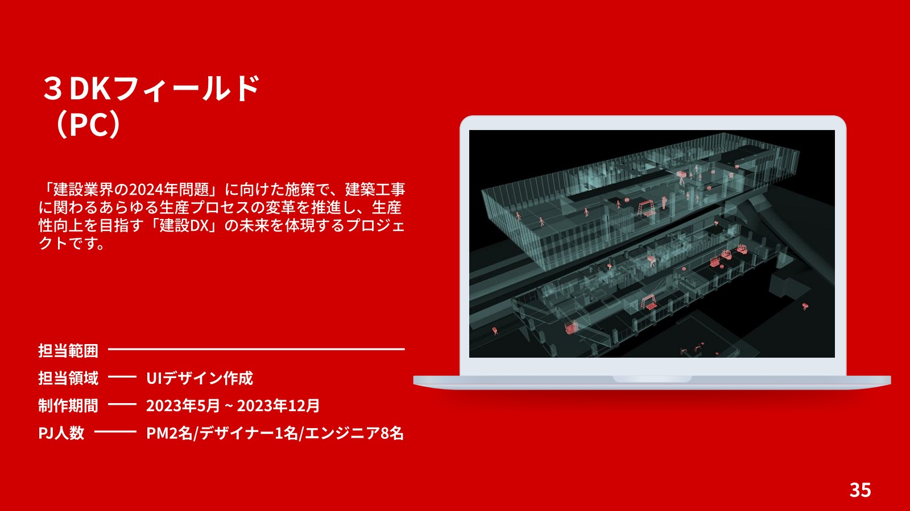
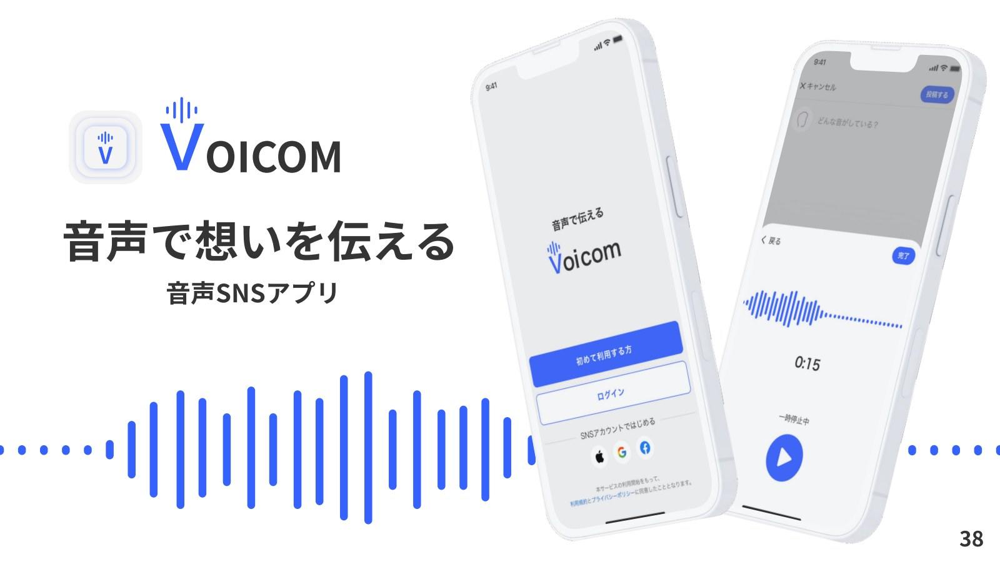

情報設計・UIデザイン・既存画面の改善
Palmu｜ランキング刷新プロジェクト
あらゆるレベルの配信者が活躍できるランキングへ刷新。ランク・配信者属性ごとの分類や色分け、上位入賞者の表彰台UIを設計しました。
制作実績
株式会社Light、アジアクエスト株式会社で担当した実績と、自主制作作品を紹介します。

情報設計・UIデザイン・既存画面の改善
あらゆるレベルの配信者が活躍できるランキングへ刷新。ランク・配信者属性ごとの分類や色分け、上位入賞者の表彰台UIを設計しました。

情報設計・UIデザイン・既存画面の改善
登録直後から好みの配信枠へたどり着ける導線を設計。入力項目の整理、進捗表示、興味関心を直感的に選ぶUIで、初回体験を見直しました。

デザインシステム設計・コンポーネント整備・ガイドライン作成
UIの一貫性と制作効率の向上を目指し、デザインシステムを構築。主要コンポーネント30種類以上、100以上のバリアントを整備しました。

バナーデザイン・イベントLP・Webサイト制作
Palmuのバナー、イベントLP、Webサイトの制作実績を掲載。各施策に合わせたビジュアルと情報の見せ方をデザインしました。

UIデザイン作成・要件定義
全国のRakuten STAY施設の検索・宿泊予約ができるアプリ。特徴的な設備から施設を絞り込める、iOS・Android向けのUIデザインと要件定義を担当しました。

UIデザイン作成
建設業界の生産性向上を目指す、建設DXのプロジェクト。建築工事の生産プロセスを支えるPC向けUIデザインを担当しました。

自主制作・サービス企画・UIデザイン
「音声で想いを伝える」をテーマにしたSNSアプリ。誰かの発信が、新しい価値観や気づきにつながる体験を目指して企画・デザインしました。